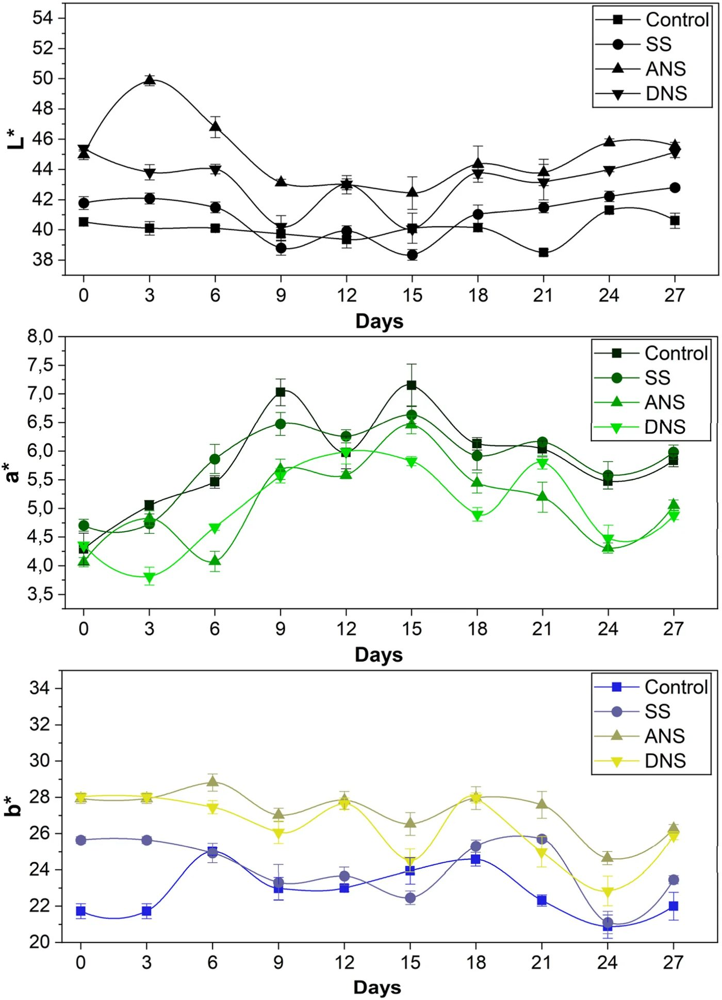
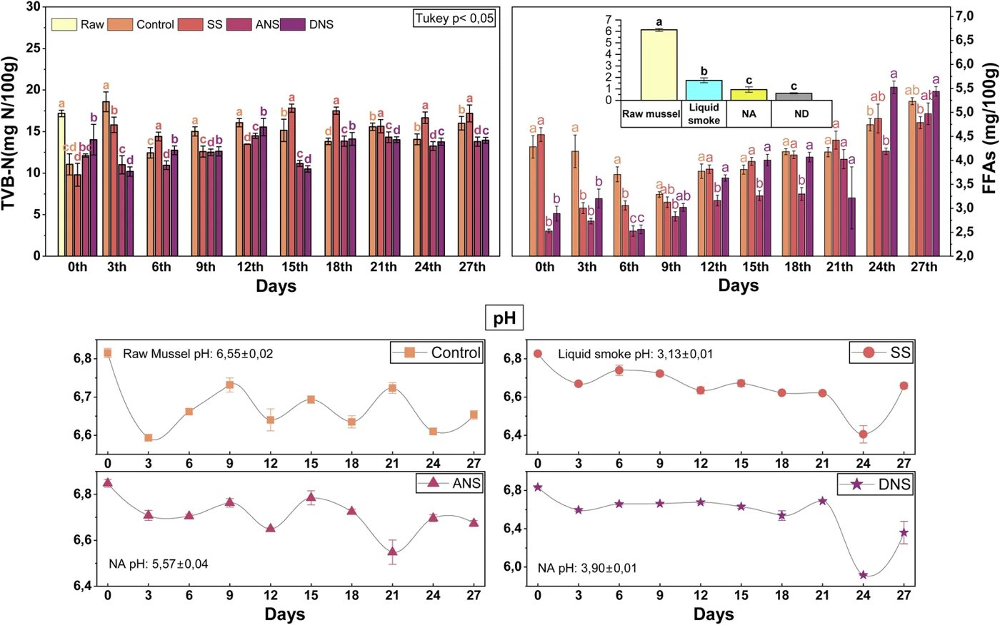
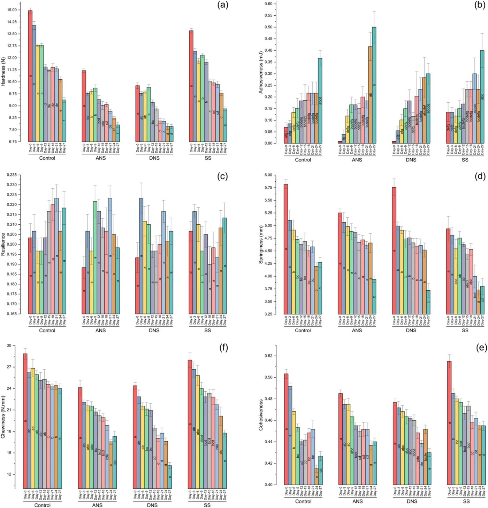
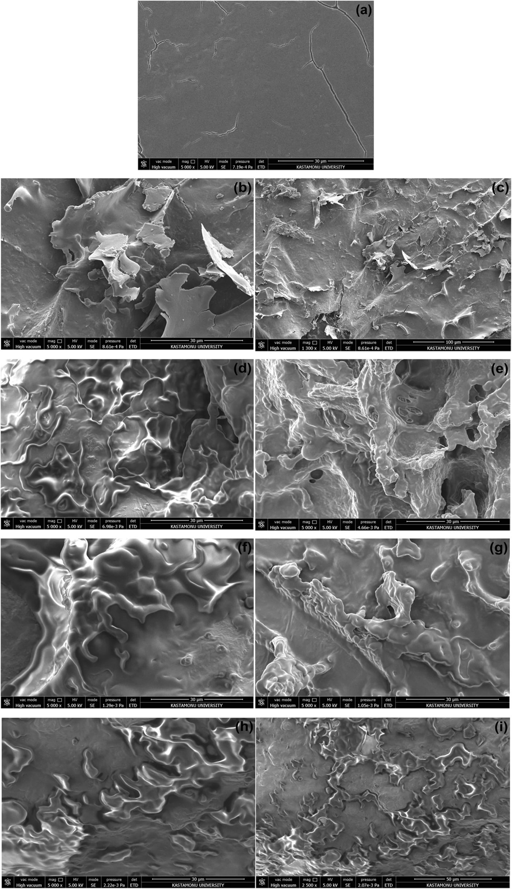
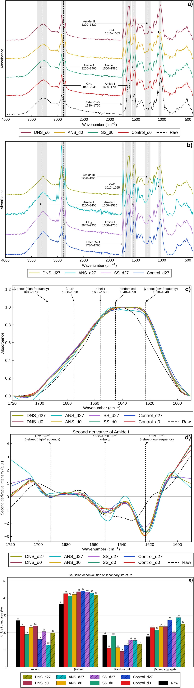
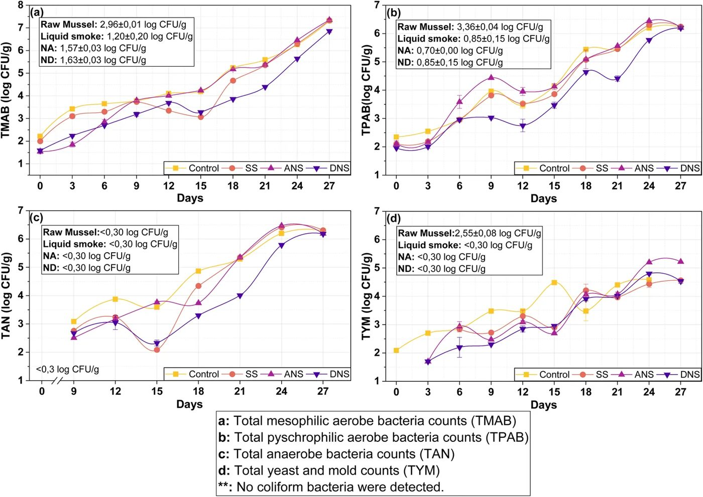
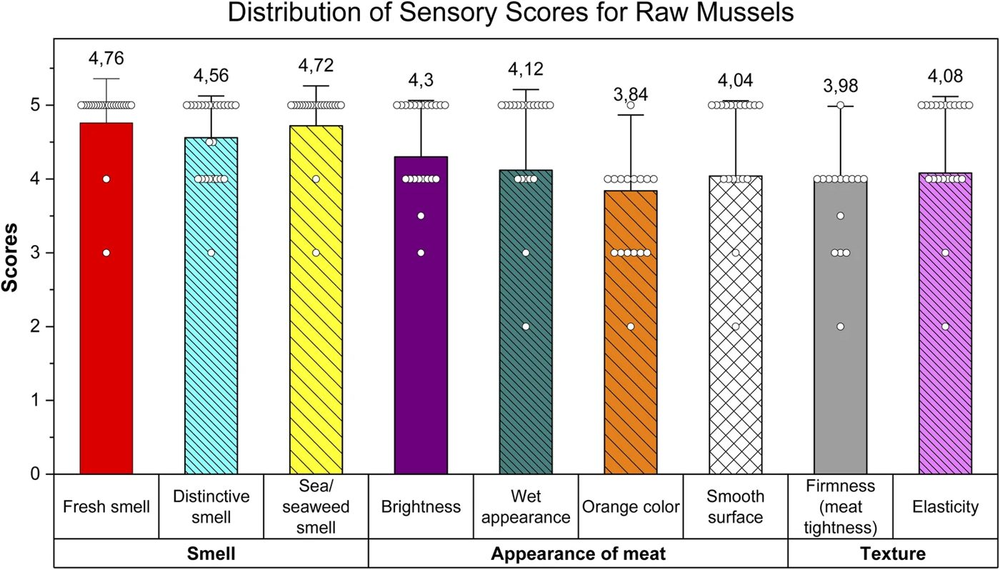
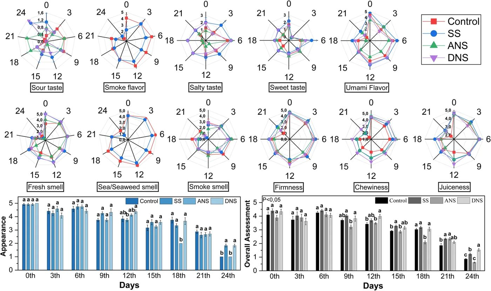
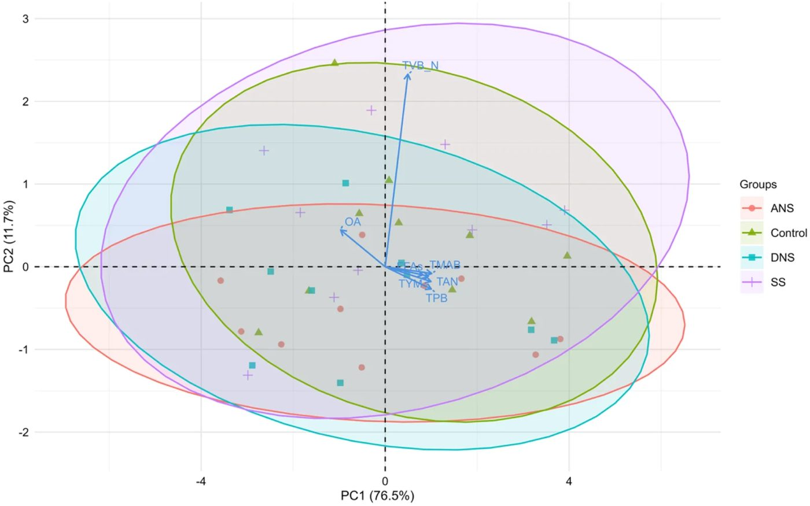
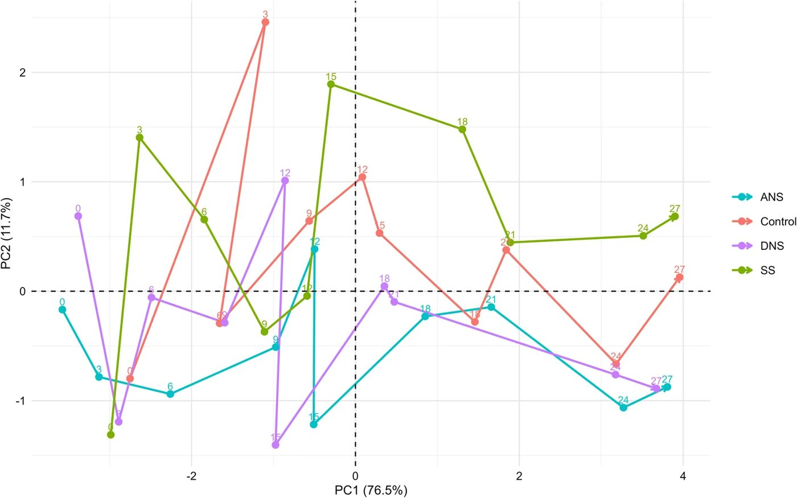

Жидкий дым и наноэмульсия продлевают свежесть мидий су-вид до 24 дней


Черноморские мидии — крайне скоропортящийся деликатес, который сложно транспортировать и хранить без заморозки. Исследователи протестировали барьерный метод консервации, соединив готовку в вакууме при 85 °C с коптильным ароматизатором и подсолнечной наноэмульсией. Такой подход сдержал окисление липидов, замедлил накопление летучего азота и сохранил упругую структуру волокон. Срок безопасного хранения моллюсков в холодильнике при 3 °C вырос до 24 суток.
Главное
- Су-вид при 85 °C (10 мин) с жидким дымом и наноэмульсией продлевает срок хранения мидий при 3 °C с 18 до 24 суток
- Летучий базисный азот (TVB-N) в группе с наноэмульсией и дымом удерживался значительно ниже нормы в 35 мг N/100 г
- Ультразвуковая наноэмульсия уменьшает размер капель до 190 нм при нагреве, стабилизируя структуру мышечных волокон
Режимы
| Продукт | Способ | Температура | Время | Результат |
|---|---|---|---|---|
| Мясо мидий (Mytilus galloprovincialis) | Су-вид (контроль) | 85 | 10 мин | Срок хранения 18 дней при 3 °C; затем превышение микробиологического лимита |
| Мясо мидий (Mytilus galloprovincialis) | Су-вид + 5% жидкий дым (SS) | 85 | 10 мин | Срок хранения продлен до 21 дня при 3 °C; сдерживание роста микрофлоры |
| Мясо мидий (Mytilus galloprovincialis) | Су-вид + наноэмульсия масла (ANS) | 85 | 10 мин | Срок хранения 18 дней при 3 °C; аналогичен контролю по микробиологии |
| Мясо мидий (Mytilus galloprovincialis) | Су-вид + наноэмульсия с жидким дымом (DNS) | 85 | 10 мин | Срок хранения 24 дня при 3 °C; минимальный TVB-N и стабильная текстура |
Подробнее
Технология су-вид (sous-vide, пастеризация продуктов в вакуумной упаковке) при 85 °C в течение 10 минут обеспечивает базовую микробиологическую безопасность мидий, однако в чистом виде (контрольная группа) бактериальный порог превышается уже к 18-му дню хранения при температуре 3 °C. Чтобы отодвинуть рамки порчи без синтетических консервантов, технологи применили барьерный подход (hurdle technology): объединили мягкий нагрев с 5%-м жирорастворимым жидким дымом и наноэмульсией на основе подсолнечного масла (соотношение мяса к эмульсии 2:1). В состав эмульсии входили вода (80%), масло (4–14%), пищевой эмульгатор полисорбат 80 (Tween 80, 3%) и этанол (3%), гомогенизированные на ультразвуковом процессоре при мощности 51%.
Комплексная группа DNS (наноэмульсия с жидким дымом) показала синергетический эффект: капли эмульсии в процессе термообработки уменьшились с 253 нм до 190,15 нм, сохранив стабильность за счёт дзета-потенциала от -24,45 до +27,10 мВ. Это обеспечило глубокое распределение фенольных соединений, защитивших мышечные волокна от гидролиза и термического разрушения, что подтвердили данные электронной микроскопии (SEM) и инфракрасной спектроскопии (FTIR). К 24-му дню в группе DNS общий летучий базисный азот (TVB-N) оставался существенно ниже критического норматива 35 мг N/100 г, а накопление свободных жирных кислот оказалось минимальным, тогда как контрольные мидии испортились к 18-му дню, а образцы только с жидким дымом (SS) — к 21-му дню.
Ограничения
Испытания проводились исключительно на средиземноморских мидиях из Черного моря при строгом соблюдении температуры хранения 3 °C; дегустационная выборка составила 6 экспертов.
Полный перевод статьи
Резюме
Морепродукты являются важным и устойчивым источником белка для растущего населения планеты. Среди различных водных видов средиземноморская мидия (Mytilus galloprovincialis) считается весьма перспективным источником пищи благодаря высокому содержанию качественного белка, богатому профилю полиненасыщенных жирных кислот и незаменимым макро- и микроэлементам. Среднее мировое потребление двустворчатых моллюсков составляет 2,6 кг на душу населения, а мировое производство моллюсков в 2023 году достигло 25,8 млн тонн, что составляет 14% от общего объема продукции рыболовства и аквакультуры. В связи с этим растущим спросом в Турции в последнее время наблюдается быстрый рост сектора аквакультуры, особенно в области выращивания мидий. За последние несколько лет культивирование мидий стало четвертым по темпам роста сегментом аквакультуры в Турции после форели, сибаса и морского леща. Из-за фильтрационного способа питания мидии крайне восприимчивы к загрязнению окружающей среды и быстро портятся; срок хранения этого продукта при охлаждении строго ограничен и составляет от 1 до 2 дней (сырые) и от 5 до 6 дней (обработанные), главным образом из-за микробной порчи и потенциального размножения патогенных бактерий. Кроме того, несоблюдение гигиенических стандартов при переработке может повысить уровень патогенной микрофлоры и ускорить порчу.
Важно
Мидии — ценный источник белка, но из-за фильтрационного питания и высокой влажности они быстро портятся (срок хранения 1–6 дней), что требует применения технологий консервации.
В условиях растущего потребительского спроса на свежие, минимально обработанные морепродукты, сохраняющие максимальную пищевую ценность, все чаще применяются мягкие методы термической обработки. Хотя продукты, прошедшие мягкую термообработку и охлаждение, могут вызывать опасения у общественности относительно микробиологической безопасности, Европейский союз рекомендует тепловую обработку при 60–95 °C в течение 10–30 минут для обеспечения отсутствия патогенов. Кроме того, высокое содержание влаги в мясе мидий ограничивает срок его хранения, препятствуя дистрибуции в отдаленные регионы, что подчеркивает необходимость технологий переработки для продления срока годности и выхода на новые рынки. Однако традиционные методы консервации, такие как замораживание, могут ухудшить общее качество за счет снижения сенсорных характеристик, особенно текстуры и вкуса. Это указывает на критический пробел в отрасли, требующий разработки безопасных стратегий консервации с использованием нескольких барьеров (hurdle technology) для вывода на рынок высококачественных продуктов из мидий.
Для безопасного продления срока хранения мидий и сохранения их «свежих» сенсорных свойств применялись различные методы: варка/вакуумная упаковка, копчение, консервирование, жарка/запекание и пастеризация в красном соусе. Поскольку сырое мясо мидий быстро портится, термическая обработка является обязательной и требует точного регулирования температуры и времени для оптимизации качества. В этом контексте метод су-вид (SV) — приготовление вакуумированных продуктов при точно контролируемых параметрах — минимизирует потерю питательных веществ, инактивируя ферменты деградации и микроорганизмы. Это согласуется с технологиями «cook-chill», включающими приготовление при температуре ниже 100 °C, быстрое охлаждение до 0–3 °C и хранение в охлажденном виде. Для мидий рекомендуется обработка SV при 85 °C в течение 10 минут; однако, поскольку не протеолитические штаммы Clostridium botulinum могут вырабатывать токсины в течение 31 дня при 3,3 °C, срок хранения морепродуктов, обработанных методом SV, обычно ограничивается 28 днями.
Пояснение
Метод су-вид (sous-vide) — это приготовление пищи в вакуумной упаковке при строго контролируемой температуре, что позволяет сохранить текстуру и питательные вещества, но требует соблюдения температурного режима для безопасности.
Для преодоления этого ограничения и улучшения консервации можно интегрировать фракции жидкого дыма, инактивирующие патогены. Жидкий дым, получаемый путем пиролиза биомассы, содержит карбонилы и фенолы, которые определяют вкус, цвет, pH и срок хранения продукта благодаря антибактериальной и антиоксидантной активности. Предлагая более безопасную и стандартизируемую альтернативу с меньшим накоплением полициклических ароматических углеводородов (ПАУ) по сравнению с традиционным копчением, он применим путем распыления, погружения или прямого введения. Для дальнейшей оптимизации доставки и эффективности таких биоактивных антимикробных средств в морепродуктах появились наноэмульсионные системы. Эти системы эффективно повышают антимикробную активность и облегчают включение летучих эфирных масел в пищевые матрицы, увеличивая их распределение в зонах, где активно размножаются микроорганизмы. В последнее время применение наноэмульсий к водным продуктам приобрело значительный импульс. Существующая литература показывает, что наноэмульсии в основном используются для таких видов рыб, как форель, морской лещ и сибас, причем исследования неизменно демонстрируют их эффективность в продлении срока хранения этих продуктов. Однако, насколько нам известно, ни одна литература не рассматривает синергетические эффекты сочетания наноэмульсии, жидкого дыма и обработки SV у двустворчатых моллюсков, в частности мидий. Чтобы восполнить этот пробел, в данном исследовании комплексно оценивалась интеграция ароматизатора «жидкий дым» и наноэмульсий наряду с термической обработкой SV в качестве технологии с несколькими барьерами для консервации мидий. Мидии (6–7 см) обрабатывались различными комбинациями этих инновационных методов и систематически хранились при 3 °C в течение 27 дней. Эффективность консервации и лежащие в ее основе синергетические воздействия изучались с помощью комплексной многопараметрической системы, включающей отслеживание макропоказателей качества, таких как pH мяса, изменение цвета, сенсорные характеристики, накопление общего летучего основного азота (TVB-N), образование свободных жирных кислот (FFA) и микробиологическую нагрузку. Важно отметить, что для более глубокого понимания влияния обработок на пищевую матрицу структурная целостность тканей и молекулярная характеристика исследовались с помощью сканирующей электронной микроскопии (SEM) и Фурье-ИК-спектроскопии (FT-IR).
Использовались реактивы аналитической чистоты: борная кислота (CAS 10043-35-3), оксид магния (CAS 1309-48-4), агар для подсчета микроорганизмов (PCA), усиленный клостридиальный агар (RCM), фиолетово-красный желчный агар (VRBA), пептон, хлорид натрия (Merck, DE); этанол (99,5%, Carlo Erba Regents, FR); индикатор Таширо, фенолфталеин (ChemBio, TR); жидкий парафин (QLP, TR); соляная кислота (Honeywell Fluka, AT); гидроксид калия (AFG Bioscience, USA); диэтиловый эфир (Isolab Chemicals, DE); картофельно-декстрозный агар (PDA, Biolife, IT); маслорастворимый жидкий дым (Alfasol, TR); Твин 80 (Sigma-Aldrich, DE).
Всего 77 кг свежих живых средиземноморских мидий (Mytilus galloprovincialis, длина раковины 6–7 см) было выловлено в апреле 2025 года на коммерческой ферме в Черном море (санитарная классификация класса А). Вылов проводился механизированным судном с системой непрерывного подъема для минимизации травм. После вылова мидии упаковывались в сетчатые мешки из полиэтилена высокой плотности и немедленно помещались в контейнеры с охлажденной морской водой и дробленым льдом (0–2 °C). Транспортировка в лабораторию заняла около 40 минут при строгом соблюдении холодовой цепи. В лаборатории поврежденные или нежизнеспособные особи отбраковывались, остальные промывались холодной проточной водой (4 ± 1 °C). Для вскрытия раковин мидии погружали в кипящую воду (100 °C) на 2 минуты, после чего мясо извлекалось, а биссусные нити удалялись. В исследовании использовалось 9650 г мяса мидий.
Пояснение
Для анализа использовались только живые, неповрежденные мидии, прошедшие первичную термическую обработку для извлечения мяса, после чего проводилась подготовка к упаковке в асептических условиях.
Наноэмульсии (NA и ND) готовились по методу Hamouda et al. Состав NA: 80% дистиллированной воды, 14% подсолнечного масла, 3% этанола, 3% Твин 80. Состав ND: 80% воды, 4% масла, 3% этанола, 3% Твин 80 и 10% жидкого дыма (конечная концентрация в смеси для обработки мидий — 5%). Ингредиенты перемешивались на магнитной мешалке (900 об/мин, 30 мин), затем для ND добавлялся жидкий дым (еще 15 мин). Смеси выдерживались при 86 °C в течение 1 часа, охлаждались, разбавлялись водой и гомогенизировались ультразвуковым зондом (HD 2200, Bandelin Sonopuls, Германия) в течение 15 минут. Перед хранением при 4 °C эмульсии стерилизовались УФ-лампой (20 мин).
Мясо мидий порционировалось по 100 г. В группах ANS и DNS соотношение мяса к наноэмульсии составляло 2:1. Упаковка проводилась в асептических условиях в многослойные вакуумные пакеты (PE/PA/PE, 90 мкм) на машине Abant MG42 (95% вакуум). Обработка SV проводилась при 85 °C в течение 10 минут (PackTech IPX7). После обработки пакеты охлаждались в ледяной воде (10 мин) и хранились при +3 °C в течение 27 дней. Группы: Control (только SV), SS (5% жидкого дыма + SV), ANS (наноэмульсия масла + SV), DNS (наноэмульсия масла + 5% жидкого дыма + SV).
Анализировались: дзета-потенциал, размер частиц (DLS), pH (WTW ProfiLine 3110), цвет (CIE L*a*b*, Konica Minolta CR-400), TVB-N (метод Лудорфа и Мейера), свободные жирные кислоты (метод AOAC), текстура (Brookfield CT3), SEM (FEI Quanta FEG 250), FTIR (Bruker Alpha II). Микробиологические показатели: мезофильные и психрофильные аэробные бактерии (PCA), анаэробные бактерии (RCA), плесени и дрожжи (PDA), колиформные бактерии (VRBA). Сенсорная оценка проводилась по 5-балльной шкале 6 обученными экспертами. Статистика: Tukey HSD (p < 0,05), ANOVA, PCA (R 4.5.2).




Полное описание рисунка
Результаты анализа текстуры групп. Разные строчные буквы на графике указывают на межгрупповые различия, наблюдаемые при хранении внутри одной группы (p < 0,05). Control: мясо мидий, подвергнутое только SV; SS: мясо мидий, обработанное жидким дымом и подвергнутое SV-обработке; ANS: мясо мидий, обработанное наноэмульсией подсолнечного масла и подвергнутое SV; DNS: группа мяса мидий, обработанная наноэмульсией подсолнечного масла + ароматизатор «жидкий дым» (жирорастворимый, 5%) и подвергнутая SV. (a) Твердость, (b) адгезивность, (c) упругость (resilience), (d) пружинистость, (e) когезивность, (f) жевательная способность.


Полное описание рисунка
СЭМ-изображения групп и сырых мидий ((a) сырое мясо мидий, (b) 0-й день, контроль, (c) 27-й день, контроль, (d) 0-й день, ANS, (e) 27-й день, ANS, (f) 0-й день, DNS, (g) 27-й день, DNS, (h) 0-й день, SS, (i) 27-й день, SS). Control: мясо мидий, подвергнутое только SV; SS: мясо мидий, обработанное жидким дымом и подвергнутое SV-обработке; ANS: мясо мидий, обработанное наноэмульсией подсолнечного масла и подвергнутое SV; DNS: группа мяса мидий, обработанная наноэмульсией подсолнечного масла + ароматизатор «жидкий дым» (жирорастворимый, 5%) и подвергнутая SV.


Полное описание рисунка
Точные ИК-фурье спектры групп на 0-й и 27-й дни (a и b). Детальный вид области амида I (c). Интенсивность вторых производных в области амида I (d). Гауссова деконволюция соотношений вторичной структуры в области амида I (e). (Raw: свежее мясо мидий, control: мясо мидий, подвергнутое только SV; SS: мясо мидий, обработанное жидким дымом и подвергнутое SV-обработке; ANS: мясо мидий, обработанное наноэмульсией подсолнечного масла и подвергнутое SV; DNS: группа мяса мидий, обработанная наноэмульсией подсолнечного масла + ароматизатор «жидкий дым» (жирорастворимый, 5%) и подвергнутая SV).


Полное описание рисунка
Результаты микробиологического анализа групп (лог КОЕ г−1). (a) Общее количество мезофильных аэробных бактерий (КМАФАнМ), (b) общее количество психрофильных аэробных бактерий, (c) общее количество анаэробных бактерий и (d) общее количество дрожжей и плесневых грибов. Control: мясо мидий, подвергнутое только вакуумной упаковке (SV); SS: мясо мидий, обработанное жидким дымом и вакуумной упаковкой; ANS: мясо мидий, обработанное наноэмульсией подсолнечного масла и вакуумной упаковкой; DNS: мясо мидий, обработанное наноэмульсией подсолнечного масла с ароматизатором «жидкий дым» (жирорастворимый, 5%) и вакуумной упаковкой.






Полное описание рисунка
Многофакторный анализ влияния показателей качества (OA, TVB-N, FFAs, TMAB, TAN, TPB и TYM) на группы обработки. Control: мясо мидий, подвергнутое только вакуумной упаковке (SV); SS: мясо мидий, обработанное жидким дымом и вакуумной упаковкой; ANS: мясо мидий, обработанное наноэмульсией подсолнечного масла и вакуумной упаковкой; DNS: мясо мидий, обработанное наноэмульсией подсолнечного масла с ароматизатором «жидкий дым» (жирорастворимый, 5%) и вакуумной упаковкой.


Полное описание рисунка
Ухудшение качества во времени при хранении — анализ траекторий методом главных компонент (PCA). Control: мясо мидий, подвергнутое только вакуумной упаковке (SV); SS: мясо мидий, обработанное жидким дымом и вакуумной упаковкой; ANS: мясо мидий, обработанное наноэмульсией подсолнечного масла и вакуумной упаковкой; DNS: мясо мидий, обработанное наноэмульсией подсолнечного масла с ароматизатором «жидкий дым» (жирорастворимый, 5%) и вакуумной упаковкой.
Схема исследования
Статья опубликована в рецензируемом журнале RSC advances. Но и опубликованный результат — одно исследование, а не окончательный вывод.
Источник
| Источник | Категория | Лицензия |
|---|---|---|
| RSC advances (Europe PMC) | sous_vide | CC BY-NC 4.0 |
Источники
| Источник | Ссылка |
|---|---|
| Страница статьи | europepmc.org |
| Полный текст (PDF) | europepmc.org |
| DOI | doi.org |
| Метаданные Crossref | api.crossref.org |
| Europe PMC | europepmc.org |